Corpo Nacional de Escutas · desde 1925
Escuteiros na Covilhã há de 100 anos.
Ajudamos cada criança e jovem a crescer por inteiro. Autónomos, solidários, responsáveis e comprometidos. A natureza como sala de aula, o jogo como ferramenta, a fé como horizonte.
Amarra em breve
A app das secções.
CESE em breve
Reservas do Centro Escutista Serra da Estrela.
Fardamento em breve
Encomendar o uniforme.
Questões
Deixe aqui a sua pergunta.

Quem somos
O Agrupamento 20 da Covilhã
Fundado em 1925, celebrou o centenário em 2025. É o agrupamento mais antigo da Região da Guarda e um dos mais antigos em atividade em Portugal — e continua a reunir, todos os sábados, cerca de uma centena de crianças, jovens e dirigentes, como tem acontecido ao longo dos últimos anos.
Pertencemos ao Corpo Nacional de Escutas — Escutismo Católico Português, integrados na Paróquia de São Pedro da Covilhã. Vivemos o escutismo em quatro secções, cada uma à medida da idade, e em pequenos grupos onde todos têm um papel.

Quatro secções, uma família
Uma proposta para cada idade
Dos 6 aos 22 anos. Em cada secção o escutismo fala a língua da idade — do jogo e da imaginação dos Lobitos ao serviço e ao projeto de vida dos Caminheiros.
Lobitos
Descobrir o mundo a brincar, em família. A Alcateia vive o Livro da Selva.
6 – 10 anosExploradores
Explorar, construir, pôr-se à prova. A Expedição faz-se em Patrulha.
10 – 14 anosPioneiros
Assumir projetos a sério e decidir em conjunto. A Comunidade faz-se em Equipa.
14 – 18 anos
IV SecçãoCaminheiros
Servir e construir o seu projeto de vida. O Clã caminha em Tribo.
18 – 22 anosQuando nos encontramos
Sábados, das 15h00 às 17h00

Pais e famílias
APAA20 — Associação de Pais e Amigos do Agrupamento 20
Famílias e amigos que apoiam a vida do Agrupamento.
Acompanhe-nos
Fotografias e notícias
O dia a dia do Agrupamento vive nas redes sociais oficiais.